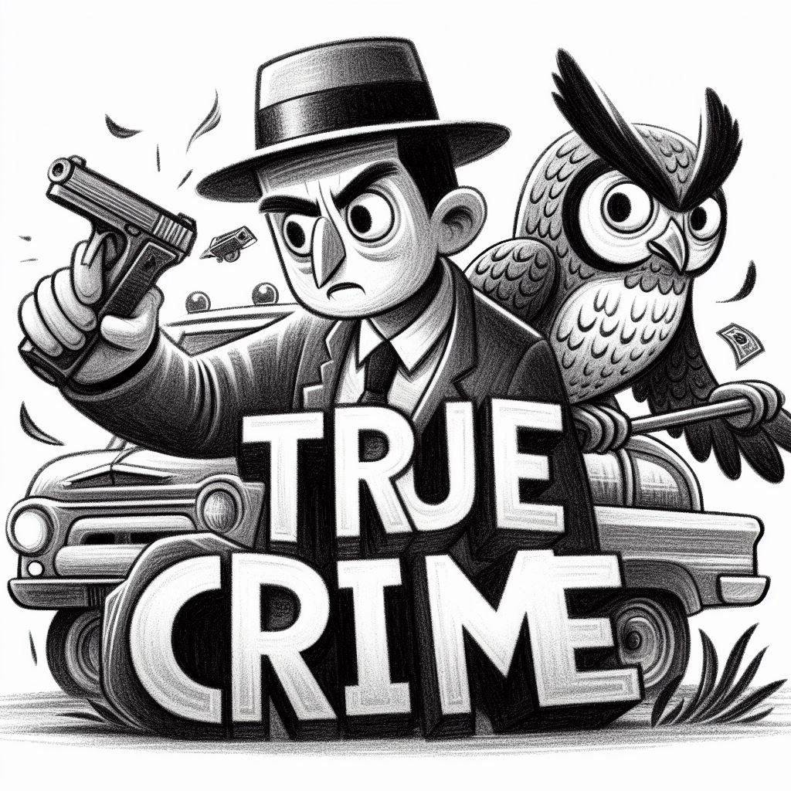
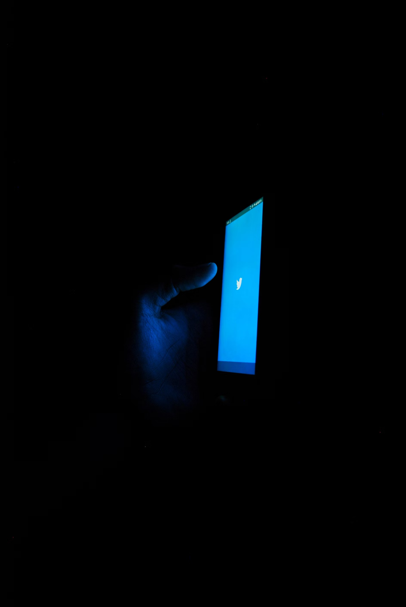

Exploring True Crime: A Deep Analysis
Introduction
True crime has captivated the public's imagination for years, generating a growing interest in the darker aspects of human nature. This phenomenon, which has found its place in literature, film, and television, is not simply a morbid curiosity but an exploration of the fears and anxieties of contemporary society. In this analysis, we will explore three reasons that explain why true crime fascinates so many people, and discuss its impact on society.
Reason 1: Human Curiosity
Human curiosity is innate. From childhood, we are driven to understand the world around us, and this includes the darker aspects of human behavior. True crime offers a window into these aspects, allowing us to explore the minds of criminals and the circumstances that led them to act. Through the narrative of these cases, viewers can reflect on what motivates them to commit such horrific acts.
Moreover, documentaries and shows about true crime have allowed viewers to learn details about cases that would otherwise remain hidden. This exploration not only satisfies curiosity but also helps us reflect on morality and the decisions people make in extreme situations. True crime stories often present ethical dilemmas that invite us to ask: what would we have done in their place?

An iconic case that illustrates this curiosity is that of Robert Durst, whose case was explored in the documentary "The Jinx." The series attracted millions of viewers eager to understand the mind of an alleged killer and sparked deep discussions about guilt, madness, and impunity. The mix of mystery and the analysis of the criminal's psyche kept the audience on the edge of their seats, highlighting the fascination with true crime.
Reason 2: Personal Safety
True crime also awakens a sense of personal safety. By learning about crimes and how to prevent them, people can feel more empowered and prepared to protect themselves and their loved ones. This quest for knowledge is not just about understanding crime itself but also about how to prevent it.
Watching true crime documentaries can provide valuable insights into the tactics criminals use, as well as warning signs that can help identify dangerous situations before they escalate. This becomes a tool for self-preservation, offering the audience a sense of control over their safety.

A prominent example is the documentary "The Keepers," which investigates the murder of Sister Cathy Cesnik and the possible connection to a sexual abuse scandal at the Catholic school where she taught. Through interviews with friends, family, and former students, the documentary not only narrates the tragedy of the crime but also examines the cover-up and the struggle for justice. Viewers not only get involved in the story but also receive information on how similar situations can be prevented in the future, strengthening their sense of security and control.
Reason 3: Emotional Connection
Finally, true crime can evoke a deep emotional connection. When watching or reading about these cases, viewers often feel empathy for the victims and their families. This connection can be powerful as it reminds us of the fragility of life and the importance of justice. True crime cases can generate a strong sense of community among those seeking justice for victims and their loved ones.
The storytelling of these crime narratives often resonates in the hearts of viewers, leading them to reflect on life, death, and justice. This shared experience can unite people in the quest for a deeper understanding of human nature.
Conclusion
In conclusion, the fascination with true crime stems from a combination of human curiosity, the quest for personal safety, and emotional connection. By exploring these narratives, we not only satisfy our curiosity but also seek to understand the darker side of humanity and the realities behind the stories. True crime invites us to reflect on morality, justice, and the complexities of the human experience.
Comments